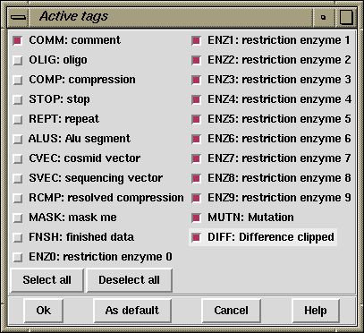

Each command using tags (for example to mask tagged sequence segments) can utilise the Tag Selector to determine which tag types are to be used. As each command has its own particular use for tags, the default tags are command specific.

The Tag Selector dialogue
(which is available from the relevant gap4 options)
consists of a set of checkbuttons plus commands to
select all tags or to deselect all tags. The "OK" button quits the display and
accepts the selected list as the current list of active tags. The "Cancel"
button quits the display without making any changes. The "As default" button
marks the current selected tags as the defaults to be used for all future uses
of this command. These selections are not saved to disk and will be lost when
the program quits. To permanently set the default tag types, users must
modify their
`.gaprc' file. Brief instructions on how to edit this file follow.
They are also contained within the copy of the file distributed with
the package: `$STADENROOT/tables/gaprc'. Search for "Tag
type lists".